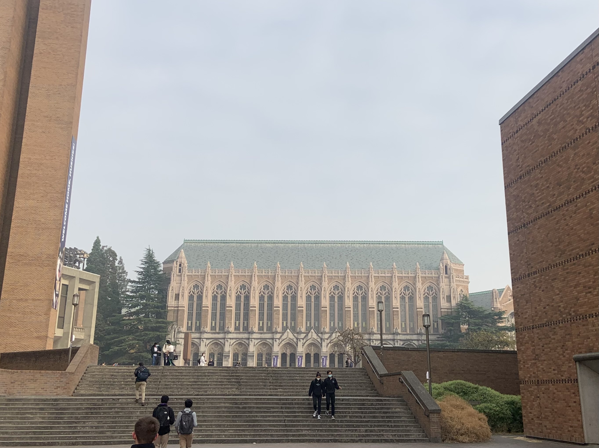
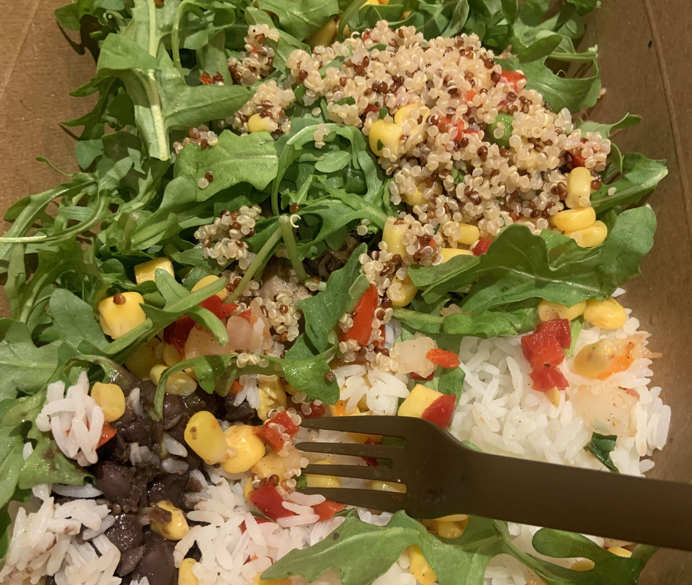

reflecting on autumn quarter '22
december 24th, 2022 · tldr

Inertia
Though I didn't take a PHYS class this quarter, the word I would use to sum up my first couple months at the UW would be "inertia". It's a simple principle that I learned at a young age:
in·er·tia (aagney's definition): an object at rest will stay at rest until another force comes along to move it.
I've been a frequent victim of inertia throughout this past quarter. I found myself spending afternoons, weeknights, and even Friday nights locked in my dorm room scrolling on my phone to kill time. I've had my fair share of battles with inertia in years past, but there's always been some motivating factor to keep me moving.
Namely, growing up with club soccer practice and games gave me something to structure my days around, not to mention good exercise. Three or four rest days a week during the soccer season was fine, but seven has me feeling a bit purposeless. I forgot to sign up for 3v3 IMA soccer, but that’s no excuse when you own a pair of cleats, a ball, and live a ten second elevator ride down from Denny field. Truth be told, without the commitment of an organized team, I ditched the sport. I'm hoping that IMA futsal will spark a glorious turnaround in winter quarter - only three days till registration opens!
Extracurricular clubs also took up a lot of my time in high school. Meetings, projects, leadership positions, and volunteering were time commitments that kept me feeling productive. I didn’t have the most involved quarter outside my classes. I started a research position, joined a couple clubs’ discord servers, and that’s about it. For winter quarter, I’ve scouted two clubs that spark my interest: Husky Coding Project and Software Engineering Career Club. Though I'm hesitant, commiting to at least one of these clubs sounds fulfilling.
I had a conversation with my good friend about how filling up your schedule with non-schoolwork actually makes you complete your schoolwork more productively. Without other commitments - whether sports, socialization, or clubs - schoolwork seems to expand to fill up your time.
But having those commitments forces you to make the most out of the limited time you have, and you therefore get more done in a shorter period. That's a good observation.
The Bad
Internships: Demoralizing, draining, depressing, and seemingly hopeless. Those are the words I would use to sum up my experience searching for internships so far. I feel like I did everything I was supposed to. Craft a beautiful resume. Use key words. Format it properly. Spam apply. Spam apply some more, and then some more. Yet the more companies I apply to, the more futile it all feels.
I did receive a few general coding assessment invitations: mostly automated emails, I suspect, from companies that had long fulfilled their intern roles in the previous months. But alas, my lack of algorithms experience killed whatever sliver of hope I might've had. I'm reaching the point of defeat, and beginning to accept that I'll have to
just put my head down and focus on the present. I'll keep trying for now...
Sickness: I'm perpetually sick at college. Sore throat, cough, congestion. It slowly gets worse, then slowly gets better, and I'm recovered for about five days. Then it starts again, but the symptoms are different. Fatigue, cough, chills, but no sore throat. And the cycle repeats, my body mixing and matching random symptoms to create some new, unprecedented disease that apparently falls somewhere between COVID, the Flu, and RSV. The doctors that I've visited, however, have dismissed my body's new superdiseases as nothing to worry about. Excelling in and out of school is extremely hard when crippled with sickness, I've learned.
Food: I'm not a picky eater. I was confident that I wouldn't get sick of college food. By week seven or so though, my confidence began to sputter out as the nonstop stream of DubStreet Burgers and Latin Bowls (see below) slowly became insufferable. I've gotten to the point where only a few items at the dining hall sound appetizing, and I'm only a third done with this year.
I suppose that exercising more will build up a bigger appetite: perhaps one more tolerant of the limited options available at the dining hall. If that fails, I'll have to start meal prepping or cooking meals. I'd like to start shopping at the much more bountiful West Campus District Market, but it's a lengthy 0.6 mile walk away from my room.
The Good
Classmates: Like I said earlier, I've met some absolutely fantastic people despite not having a real friend group. These people have been amazing academic supports, and it's safe to say that I wouldn't have achieved what I did academically without these people. For example, one friend I met in CSE 351 helped me through a lab despite not being my partner. He spent over an hour of his own time after class sitting down with me and working through my set of problems and bugs. Another student I met from the same class let me join his study group, where I was able to prepare myself for the class's midterms and finals. In my math class, I sat next to a fellow soccer fanatic, who became a good friend that I studied for the final with. In my honors class, my friend always caught me up any time I overslept the 8:30 class.
COM^2: I lied earlier. I'm technically part of a club called COM^2, which is basically the CSE student body club. I signed up to be a 'little' for their big-little program, and my experience so far has been nothing but positive. It's really casual, but that's what makes it so pleasant. My group has met a couple times for boba, and our discussions turn into productive Q&As about all things UW CS. I came away from these meetings feeling refreshed and reassured, and my big and fellow littles have been amazing.
CSE Building: I'm not sure what we did to deserve this architectural beauty, nor am I sure why we need so many floors and rooms, but the CSE building is great.It provides a meeting area for study groups and an exclusive study spot that's not insanely crowded all the time (Odegaard, I'm looking at you). I tend to want to study in my room a lot, which gets boring, but I hope to visit this place a lot more often and explore all that it has to offer.

...
tl;dr: Without many commitments other than school, I found myself with little else to do but sit in my room and kill time. Next quarter, I'll try to get more active both with soccer and CS extracurriculars. With the stress of searching for internships, constant illness, and a growing distate for dining hall food, this quarter felt impossible at times. But my peers, mentors, and resources have been amazing supports for me.